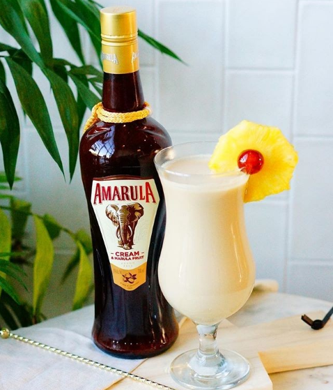

Aromatic | Creamy | Tangy
Introduce a whole new flavour-space to the piña colada by adding an African twist to the classic coconut-pineapple pairing.
Bless the rains in Africa that water the marula fruit tree and make this variation of the piña colada a possibility!
Marula cream liqueur is a game changer for this cocktail. By itself, it is packed with a complex blend of flavours, having an overall sweet taste but with predominating tones of vanilla, citrus and toasted hazelnut. The texture, equally complex, is smooth and categorically creamy, but light enough not to be overpowering or leave your mouth feeling coated and heavy.
Marula cream, bold and complex as it is, doesn't always play nice with other drinks. In this cocktail, however, it is right at home! The citrusy flavour joins the pineapple in presenting a refreshing fruity taste. The earthier tones of vanilla and hazelnut ground the sweetness and pair perfectly with the coconut and rum. The light creamy texture fits with the typical creaminess of a colada without becoming overbearing. You can't help thinking this is how a piña colada always should have been.
So if you like piña coladas ... then this will be an instant hit. Grab a glass and escape!
Rim the edge of a tall glass with cinnamon.
Fill a shaker with ice cubes add all ingredients except the pineapple slice
Shake vigorously for 10 seconds
Strain into the glass containing a few ice cubes using an ice strainer.
Garnish with the pineapple slice.